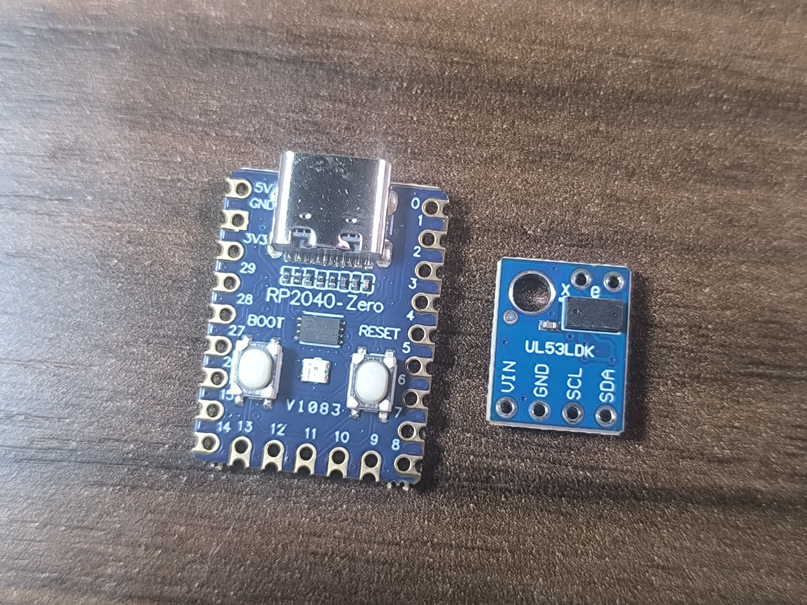

1. Overview
The board should permanently connect an RP2040-Zero to a VL53LDK-marked GY-530-style ToF breakout for a USB desk-height sensor. It excludes motor control, relays, mains voltage, enclosure fabrication and software.
Review request: verify the pin map, voltage domains, footprint fit, USB/programming access, optical clearance, routing and manufacturing export path before any prototype order.
2. Evidence
Physical evidence is partially captured. See evidence record, received-module specification and pin truth table. No marketplace photograph is treated as proof of the received revision.


| Module | Known | Blocked item |
|---|---|---|
| RP2040-Zero candidate | RP2040-Zero silkscreen, USB-C, numbered GPIO pads, 5V/GND and BOOT/RESET controls | Exact revision/clone status, dimensions, pad offsets and I2C pin confirmation |
VL53LDK-marked GY-530-style board | Four lower-edge VIN/GND/SCL/SDA pads, opposite-edge X/e pads, optical package and corner hole visible | Silicon identity, regulator/level shifting, pitch, optical keep-out and X/e function |
3. Design candidate
Source: src/carrier.tsx. Variant A is a 52 × 38 mm provisional carrier with four 3.2 mm carrier mounting holes and the ToF module's separate 3 mm corner hole. The render shows all 23 RP2040-Zero edge pads, all six ToF pads (VIN/GND/SCL/SDA plus X/e), both module outlines, the optical keep-out and four routed signals. X/e remain explicitly unconnected.
Mechanical assumptions are listed in mechanical-constraints.md. The detailed received-module specification is available as a standalone hardware page. The four-variant contract and renders are on the variant matrix; the photo-to-render comparison is in the visual-fit review. Variants B–D are parked placeholder studies and are not part of the Variant A fit approval.
4. Manufacturing candidate
Expected exports and their verification state are listed in exports/manifest.json. The core pipeline proof produced standalone schematic SVG, PCB SVG and Circuit JSON. The placeholder candidate also produced schematic, PCB and Circuit JSON. Gerbers/BOM/placement exports remain pending; the tsci CLI path hits a native Rollup application-policy error on the author’s Windows machine.
{kind=link}
{kind=link}
{kind=link}
{kind=link}
Do not send this candidate to a PCB house.
5. AI context
The controlled prompt, assumptions and tool versions are in design-prompt.md. This context contains no secrets or private purchase data.
6. Review checklist
- Do the evidence-backed pin map, voltage domains and I2C pull-ups match the schematic?
- Do the module footprints, USB clearance, optical opening and mounting fit the real boards?
- Are copper widths, clearances and cable-load paths suitable for under-desk use?
- Is the export package sufficient and manufacturable?
- What must change before a first prototype can be ordered?
Record each finding in review-findings.md with severity, owner decision and closure evidence.
7. Change log
Revision history: CHANGELOG.md. No qualified reviewer has approved this candidate and no fabrication decision has been made.